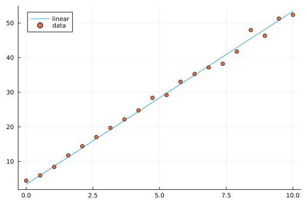
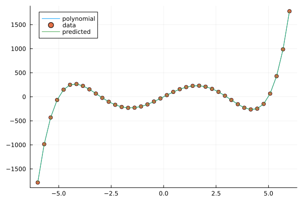
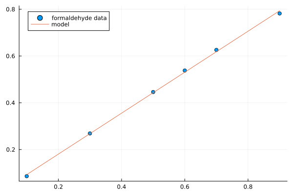
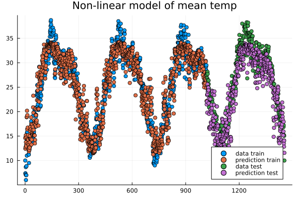
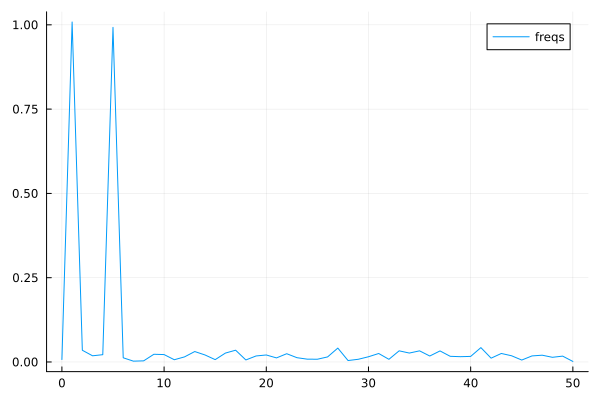
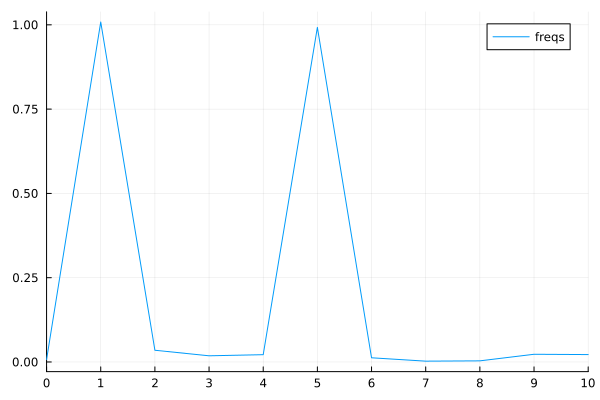
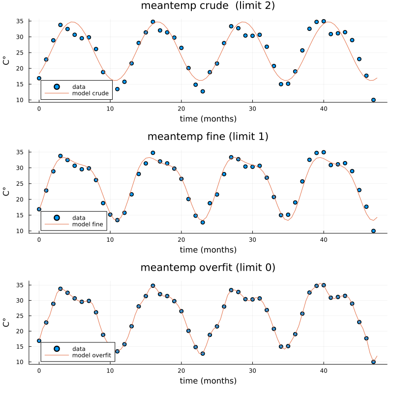

Regression and time-series prediction¶
Questions
How can I perform simple linear regression in Julia?
How to do linear regression with non-linear basis functions?
How do to basic Fourier based regression?
How to perform non-linear regression and time-series prediction?
Instructor note
90 min teaching
60 min exercises
Callout
The code in this lesson is written for Julia v1.12.6.
Linear regression with synthetic data¶
We begin with some simple examples of linear regression on generated data. For the models we will use the package GLM (Generalized Linear Models), which among other things contains linear regression models.
Let’s start by generating some data along a line and add normally distributed noise.
using Plots, GLM, DataFrames
X = Vector(range(0, 10, length=20))
y = 5*X .+ 3.4
y_noisy = @. 5*X + 3.4 + randn()
plt = plot(X, y, label="linear")
plot!(X, y_noisy, seriestype=:scatter, label="data")
display(plt)

Given data \(x_1,x_2,\ldots,x_k\) and responses \(y_1,y_2,\ldots,y_k\), the ordinary least squares method finds the linear function \(l(x) = ax+b\) minimizing the sum of squares error \(\sum_i (l(x_i)-y_i)^2\).
using Plots, GLM, DataFrames
X = Vector(range(0, 10, length=20))
y = 5*X .+ 3.4
y_noisy = @. 5*X + 3.4 + randn()
df = DataFrame(cX=X, cy=y_noisy)
lm1 = fit(LinearModel, @formula(cy ~ cX), df)
# the above is the same as @formula(cy ~ cX + 1), which also works
# alternative syntax
# lm(@formula(cy ~ cX), df)
StatsModels.TableRegressionModel{LinearModel{GLM.LmResp{Vector{Float64}}, GLM.DensePredChol{Float64, LinearAlgebra.CholeskyPivoted{Float64, Matrix{Float64}, Vector{Int64}}}}, Matrix{Float64}}
cy ~ 1 + cX # the constant term (intercept) is there, same as if we do @formula(cy ~ cX + 1)
Coefficients:
───────────────────────────────────────────────────────────────────────
Coef. Std. Error t Pr(>|t|) Lower 95% Upper 95%
───────────────────────────────────────────────────────────────────────
Intercept) 3.46467 0.448322 7.73 <1e-06 2.52278 4.40656
cX 5.05127 0.0766497 65.90 <1e-22 4.89024 5.21231
───────────────────────────────────────────────────────────────────────
# note the order in the formula argument
fit(LinearModel, @formula(cX ~ cy), df) # this would model line with slope 1/5 and intercept -3.4/5
Now let’s plot the resulting prediction (green) together with the underlying line (blue) and data points.
using Plots, GLM, DataFrames
X = Vector(range(0, 10, length=20))
y = 5*X .+ 3.4
y_noisy = @. 5*X + 3.4 + randn()
plt = plot(X, y, label="linear")
plot!(X, y_noisy, seriestype=:scatter, label="data")
df = DataFrame(cX=X, cy=y_noisy)
lm1 = fit(LinearModel, @formula(cy ~ cX), df)
y_pred = GLM.predict(lm1)
# alternative: do it explicitly
# coeffs = coeftable(lm1).cols[1] # intercept and slope
# y_pred = coeffs[1] .+ coeffs[2]*X
plot!(X, y_pred, label="predicted")
display(plt)
lm1

Image of linear model prediction. The example shown has intercept 2.9 and slope 5.1 (the result depends on random added noise).¶
Multivariate linear models are done in a similar way. Now we are fitting a multivariate linear function that minimizes the sum of squares error. In the following example we generate a linear function of 4 variables with random coefficients (normally distributed). On top of that we add normally distributed noise.
using Plots, GLM, DataFrames
n = 4
C = randn(n+1,1)
X = rand(100,n)
y = X*C[2:end] .+ C[1]
y_noisy = y .+ 0.01*randn(100,1)
df = DataFrame(cX1=X[:,1], cX2=X[:,2], cX3=X[:,3], cX4=X[:,4], cy=y_noisy[:,1])
lm2 = lm(@formula(cy ~ cX1+cX2+cX3+cX4), df)
display(lm2)
println("Coefficient vector:")
print(C)
cy ~ 1 + cX1 + cX2 + cX3 + cX4
Coefficients:
───────────────────────────────────────────────────────────────────────────
Coef. Std. Error t Pr(>|t|) Lower 95% Upper 95%
───────────────────────────────────────────────────────────────────────────
(Intercept) -1.21114 0.00350522 -345.52 <1e-99 -1.2181 -1.20418
cX1 2.42963 0.00375007 647.89 <1e-99 2.42218 2.43707
cX2 -0.399002 0.00354803 -112.46 <1e-99 -0.406046 -0.391959
cX3 -0.500017 0.00358613 -139.43 <1e-99 -0.507136 -0.492897
cX4 1.46202 0.00365527 399.98 <1e-99 1.45476 1.46928
───────────────────────────────────────────────────────────────────────────
Coefficient vector:
[-1.2045802862085417; 2.423632187920813; -0.4006938351986558; -0.5016991252146699; 1.4622712737941417;;]
Linear models with basis functions¶
Using the package GLM, we can incorporate linear models with basis functions in a convenient way, that is to model a function as a linear combination of given non-linear functions such polynomials or trigonometric functions.
using Plots, GLM, DataFrames
# try this polynomial
X = range(-6, 6, length=40)
y = X.^5 .- 34*X.^3 .+ 225*X
y_noisy = y .+ randn(40,)
plt = plot(X, y, label="polynomial")
plot!(X, y_noisy, seriestype=:scatter, label="data")
display(plt)

A polynomial function with noisy data.¶
Fitting a polynomial to data¶
Fitting a linear model with basis functions means that we try to approximate our function with for example a polynomial \(p(x)=ax^5+bx^4+cx^3+dx^2+ex+f\). We fit this model to the data in a least squares sense, which works since the model is linear in the coefficients \(a,b,c,d,e,f\), even though non-linear in the data \(x\). The degree of the polynomial needed to get a good fit is not known in advance but for this illustration we pick the same degree (5) as when generating the data.
using Plots, GLM, DataFrames
# try this polynomial
X = range(-6, 6, length=40)
y = X.^5 .- 34*X.^3 .+ 225*X
y_noisy = y .+ randn(40,)
plt = plot(X, y, label="polynomial")
plot!(X, y_noisy, seriestype=:scatter, label="data")
df = DataFrame(cX=X, cy=y_noisy)
lm3 = lm(@formula(cy ~ cX^5 + cX^4 + cX^3 + cX^2 + cX + 1), df)
y_pred = GLM.predict(lm3)
plot!(X, y_pred, label="predicted")
display(plt)
lm3
StatsModels.TableRegressionModel{LinearModel{GLM.LmResp{Vector{Float64}}, GLM.DensePredChol{Float64, LinearAlgebra.CholeskyPivoted{Float64, Matrix{Float64}, Vector{Int64}}}}, Matrix{Float64}}
cy ~ 1 + :(cX ^ 5) + :(cX ^ 4) + :(cX ^ 3) + :(cX ^ 2) + cX
Coefficients:
───────────────────────────────────────────────────────────────────────────────────────
Coef. Std. Error t Pr(>|t|) Lower 95% Upper 95%
───────────────────────────────────────────────────────────────────────────────────────
(Intercept) -0.0354375 0.343821 -0.10 0.9185 -0.734166 0.663291
cX ^ 5 1.00118 0.000551333 1815.92 <1e-85 1.00006 1.0023
cX ^ 4 -0.000992084 0.00169158 -0.59 0.5614 -0.00442979 0.00244563
cX ^ 3 -34.054 0.0236797 -1438.11 <1e-82 -34.1021 -34.0058
cX ^ 2 0.0230557 0.0571179 0.40 0.6890 -0.0930219 0.139133
cX 225.511 0.226822 994.22 <1e-76 225.05 225.972
───────────────────────────────────────────────────────────────────────────────────────

Fitting a polynomial to data.¶
Exercises¶
Let us illustrate linear regression on real data sets. The first dataset comes from the RDatasets package and are data from chemical experiments for the production of formaldehyde. The data columns are amount of Carbohydrate (ml) and Optical Density of a purple color on a spectrophotometer.
Sources:
Bennett, N. A. and N. L. Franklin (1954), Statistical Analysis in Chemistry and the Chemical Industry, New York: Wiley.
McNeil, D. R. (1977), Interactive Data Analysis, New York: Wiley.
Exercise
In the exerises below we use the packages GLM, RDatasets, Plots and DataFrames:
using Pkg
Pkg.add("GLM")
Pkg.add("RDatasets")
Pkg.add("Plots")
Pkg.add("DataFrames")
Formaldehyde example
To load the dataset, you can do:
using GLM, RDatasets, Plots
df = dataset("datasets", "Formaldehyde")
The columns of the dataframe are called Carb and OptDen for the amount of Carbohydrate and Optical Density. You can plot the data as follows:
plt = plot(df.Carb, df.OptDen, seriestype=:scatter, label="formaldehyde data")
display(plt)
To model Density as a linear function of Carbohydrate you can do as follows. The predict method is used to make model predictions.
model = fit(LinearModel, @formula(OptDen ~ Carb), df)
y_pred = GLM.predict(model)
To add the prediction to the plot and print the model results you can do:
plot!(df.Carb, y_pred, label="model")
display(plt)
model
A suggestion
using GLM, RDatasets, Plots
df = dataset("datasets", "Formaldehyde")
plt = plot(df.Carb, df.OptDen, seriestype=:scatter, label="formaldehyde data")
display(plt)
model = fit(LinearModel, @formula(OptDen ~ Carb), df)
y_pred = GLM.predict(model)
plot!(df.Carb, y_pred, label="model")
display(plt)
model

Changing hyperparameters
Take a look at the code in the example Fitting a polynomial to data. This fit is pretty tight.
What happens if you increase the noise by say 100 times?
What happens if if you use a degree 6 or 7 polynomial to fit the data instead?
You can try the second experiment with the original noise level.
Solution
You can change the following rows:
# y_noisy = y .+ randn(40,)
y_noisy = y .+ 100*randn(40,)
# lm3 = lm(@formula(cy ~ cX^5 + cX^4 + cX^3 + cX^2 + cX + 1), df)
lm3 = lm(@formula(cy ~ cX^7 + cX^6 + cX^5 + cX^4 + cX^3 + cX^2 + cX + 1), df)
Let us have a look at linear regression on real multidimensional data. For this we will use the Rdatasets package and the “trees” dataset, which consists of measurements on black cherry trees: girth, height and volume (see Atkinson, A. C. (1985) Plots, Transformations and Regression. Oxford University Press).
Black cherry trees
In this exercise we use also the package StatsBase:
using Pkg
Pkg.add("StatsBase")
Load the trees data set as follows:
using GLM, RDatasets, StatsBase, Plots
# Girth Height and Volume of Black Cherry Trees
trees = dataset("datasets", "trees")
df = trees
Randomly split the data set into a training and testing data set.
n_rows = size(df)[1]
rows_train = sample(1:n_rows, Int(round(n_rows*0.8)), replace=false)
rows_test = [x for x in 1:n_rows if ~(x in rows_train)]
L_train = df[rows_train,:]
L_test = df[rows_test,:]
It is reasonable to try to fit the logarithm of volume as a linear function of the logarithm of the height and logarithm of the girth. This is because the volume is presumably roughly proportional to the height times the girth squared.
# reasonable to look at logarithms since we can expect something like V~h*g^2 and
# log V = constant + log h + 2log g
model = fit(LinearModel, @formula(log(Volume) ~ log(Girth) + log(Height)), L_train)
Lastly, make predictions on the training set according to the model and compute the root mean squared error of the prediction (for instance on the training set).
Z = L_train
# Z = L_test
y_pred = GLM.predict(model, Z)
# Root Mean Squared Error
rmse = sqrt(sum((exp.(y_pred) - Z.Volume).^2)/size(Z)[1])
The whole script
using GLM, RDatasets, StatsBase, Plots
# Girth Height and Volume of Black Cherry Trees
trees = dataset("datasets", "trees")
df = trees
n_rows = size(df)[1]
rows_train = sample(1:n_rows, Int(round(n_rows*0.8)), replace=false)
rows_test = [x for x in 1:n_rows if ~(x in rows_train)]
L_train = df[rows_train,:]
L_test = df[rows_test,:]
# reasonable to look at logarithms since can expect something like V~h*r^2 and
# log V = constant + log h + 2log r
model = fit(LinearModel, @formula(log(Volume) ~ log(Girth) + log(Height)), L_train)
Z = L_train
# Z = L_test
y_pred = GLM.predict(model, Z)
# Root Mean Squared Error
rmse = sqrt(sum((exp.(y_pred) - Z.Volume).^2)/size(Z)[1])
println(rmse)
df
2.2631848027992776 # rmse
31×3 DataFrame
Row │ Girth Height Volume
│ Float64 Int64 Float64
─────┼──────────────────────────
1 │ 8.3 70 10.3
2 │ 8.6 65 10.3
3 │ 8.8 63 10.2
4 │ 10.5 72 16.4
5 │ 10.7 81 18.8
6 │ 10.8 83 19.7
7 │ 11.0 66 15.6
8 │ 11.0 75 18.2
9 │ 11.1 80 22.6
10 │ 11.2 75 19.9
11 │ 11.3 79 24.2
And so on (31 data points).
Trigonometric basis functions
Try a similar example as the polynomial above but with trigonometric functions \(y(x)=\cos(x)+\cos(2x)\). Here is a snippet that generates data for this example:
using Plots, GLM, DataFrames
X = range(-6, 6, length=100)
y = cos.(X) .+ cos.(2*X)
y_noisy = y .+ 0.1*randn(100,)
To make a dataframe out of the data and fit a linear model to it, you can do:
df = DataFrame(X=X, y=y_noisy)
lm1 = lm(@formula(y ~ 1 + cos(X) + cos(2*X) + cos(3*X) + cos(4*X)), df)
A suggestion.
using Plots, GLM, DataFrames
# try a cosine combination
X = range(-6, 6, length=100)
y = cos.(X) .+ cos.(2*X)
y_noisy = y .+ 0.1*randn(100,)
plt = plot(X, y, label="waveform")
plot!(X, y_noisy, seriestype=:scatter, label="data")
display(plt)
df = DataFrame(X=X, y=y_noisy)
lm1 = lm(@formula(y ~ 1 + cos(X) + cos(2*X) + cos(3*X) + cos(4*X)), df)
StatsModels.TableRegressionModel{LinearModel{GLM.LmResp{Vector{Float64}}, GLM.DensePredChol{Float64, LinearAlgebra.CholeskyPivoted{Float64, Matrix{Float64}, Vector{Int64}}}}, Matrix{Float64}}
y ~ 1 + :(cos(X)) + :(cos(2X)) + :(cos(3X)) + :(cos(4X))
Coefficients:
────────────────────────────────────────────────────────────────────────────
Coef. Std. Error t Pr(>|t|) Lower 95% Upper 95%
────────────────────────────────────────────────────────────────────────────
(Intercept) 0.0130408 0.0108222 1.21 0.2312 -0.00844393 0.0345256
cos(X) 0.981561 0.015653 62.71 <1e-78 0.950486 1.01264
cos(2X) 0.984984 0.0156219 63.05 <1e-78 0.953971 1.016
cos(3X) -0.0135547 0.015573 -0.87 0.3863 -0.044471 0.0173616
cos(4X) 0.0148532 0.0155105 0.96 0.3407 -0.015939 0.0456454
────────────────────────────────────────────────────────────────────────────

Fitting trigonometric functions to data.¶
Loading data¶
We will now have a look at a climate data set containing daily mean temperature, humidity, wind speed and mean pressure at a location in Delhi India over a period of several years. The data set is available here. In the context of the Delhi dataset we have borrowed some elements of Sebastian Callh’s personal blog post Forecasting the weather with neural ODEs found here.
using DataFrames, CSV, Plots, Statistics
# data_path = <path-to-data-file>
# a string, full path to data file DailyDelhiClimateTrain.csv
# uploaded in julia-for-hpda/content/data
df_train = CSV.read(data_path, DataFrame)
df_train
M = [df_train.meantemp df_train.humidity df_train.wind_speed df_train.meanpressure]
plottitles = ["meantemp" "humidity" "wind_speed" "meanpressure"]
plotylabels = ["C°" "g/m^3?" "km/h?" "hPa"]
# color=[1 2 3 4] gives default colors
plot(M, layout=(4,1), color=[1 2 3 4], legend=false, title=plottitles,
xlabel="time (days)", ylabel=plotylabels, size=(800,800))

Plots of measurements.¶
The mean pressure data field seems to contain some unreasonably large values. Let us filter those out and consider these missing data.
using DataFrames, CSV, Plots, Statistics
# data_path = <path-to-data-file>
# a string, full path to data file DailyDelhiClimateTrain.csv
# uploaded in julia-for-hpda/content/data
df_train = CSV.read(data_path, DataFrame)
M = [df_train.meantemp df_train.humidity df_train.wind_speed df_train.meanpressure]
plottitles = ["meantemp" "humidity" "wind_speed" "meanpressure"]
plotylabels = ["C°" "g/m^3?" "km/h?" "hPa"]
df_train[df_train.meanpressure .< 950,:meanpressure] .= NaN
df_train[1050 .< df_train.meanpressure,:meanpressure] .= NaN
M = [df_train.meantemp df_train.humidity df_train.wind_speed df_train.meanpressure]
# color=[1 2 3 4] gives default colors
plt = plot(M, layout=(4,1), color=[1 2 3 4], legend=false, title=plottitles,
xlabel="time (days)", ylabel=plotylabels, size=(800,800))
display(plt)

Plots of cleaned up data.¶
Non-linear regression¶
In this section we will have a look at non-linear regression methods.
Climate data¶
Now we will consider the problem of predicting one of the climate variables from the others, for example temperature from humidity, wind speed and pressure. In the process we will see how to set up and train a neural network in Julia using the package Flux.
Background on neural networks can be found here download slides.
Some terminology relating to neural networks
Neural networks can be used to approximate non-linear functions. We define the network as a chain (composition) of so-called dense layers. The performance of the network on the training data is measured in terms of the loss function. In our case this is the mean squared error (mse), which is an analog of the sum of squares error used in linear regression. The square root of the mean squared error is called root mean squared error (rmse). The training of the network is the process of minimizing the loss function. Here, this is done with the gradient descent method using an optimizer (in this case ADAM). Gradient descent is an iterative method which repeatedly takes a step in the negative gradient direction of the loss function. Each such iteration is known as an epoch.
using DataFrames, CSV, Plots, Statistics, Dates, GLM, Flux, StatsBase
using MLJ: shuffle, partition
using Flux: train!
# data_path = <path-to-data-file>
# a string, full path to data file DailyDelhiClimateTrain.csv
df = CSV.read(data_path, DataFrame)
# clean up data, drop rows
df = filter(:meanpressure => x -> 950 < x < 1050, df)
topredict = "mean temp"
y = df.meantemp
mhumid = mean(df.humidity)
mspeed = mean(df.wind_speed)
mpress = mean(df.meanpressure)
X = [(df.humidity .- mhumid) (df.wind_speed .- mspeed) (df.meanpressure .- mpress)]
# X = [(df.humidity .- 50) (df.wind_speed .- 5) (df.meanpressure .- 1000)]
# can convert data to Float32
# aviods Warning and faster training
# X = Matrix{Float32}(X)
# y = Vector{Float32}(y)
z = eachindex(y)
# 70:30 split in training and testing
# shuffle or straight split
train, test = partition(z, 0.7, shuffle=false)
X_train = X[train, :]
y_train = y[train, :]
X_test = X[test, :]
y_test = y[test, :]
function draw_results(X_train, X_test, y_train, y_test, model)
y_pred_train = model(X_train')'
plt = scatter(train, y_train, title="Non-linear model of "*topredict, label="data train")
scatter!(train, y_pred_train, label="prediction train")
y_pred_test = model(X_test')'
scatter!(test, y_test, label="data test")
scatter!(test, y_pred_test, label="prediction test")
display(plt)
rmse_train = sqrt(Flux.Losses.mse(y_train, y_pred_train))
rmse_test = sqrt(Flux.Losses.mse(y_test, y_pred_test))
println(topredict)
println("rmse train: ", rmse_train)
println("rmse test: ", rmse_test)
end
init=Flux.glorot_uniform()
model = Flux.Chain(
Flux.Dense(3, 10, tanh, init=init, bias=true),
# Flux.Dense(10, 10, tanh, init=init, bias=true),
# Flux.Dropout(0.04),
Flux.Dense(10, 1, init=init, bias=true)
)
loss(model, tX, ty) = Flux.Losses.mse(model(tX'), ty')
data = [(X_train, y_train)]
opt_state = Flux.setup(Flux.Adam(0.01), model) # learning rate 0.01
train_loss = []
test_loss = []
n_epochs = 1000
# to animate training
# replace the rest of the code from here with snippet below
for epoch in 1:n_epochs
train!(loss, model, data, opt_state)
ltrain = sqrt(loss(model, X_train, y_train))
ltest = sqrt(loss(model, X_test, y_test))
push!(train_loss, ltrain)
push!(test_loss, ltest)
println("Epoch: $epoch, rmse train/test: ", ltrain, " ", ltest)
end
draw_results(X_train, X_test, y_train, y_test, model)
plt = plot(train_loss, title="Losses (root mean square error)", label="training", xlabel="epochs")
plot!(test_loss, label="test")
display(plt)

Data points and predictions.¶

The losses during training.¶
Epoch: 997, rmse train/test: 2.321958298905668 2.8623720534428925
Epoch: 998, rmse train/test: 2.3217000741076217 2.862347448996424
Epoch: 999, rmse train/test: 2.321443844030064 2.8623211237184116
Epoch: 1000, rmse train/test: 2.3211893059494684 2.8622934109353464
mean temp
rmse train: 2.3211893059494684
rmse_test: 2.8622934109353464
It is interesting to animate the predictions during the training of the neural network. This will also give us a quick look at animation in Julia.
# instead of the training loop above
# do this to save an animation as a gif
anim = @animate for epoch in 1:n_epochs
train!(loss, model, data, opt_state)
ltrain = sqrt(loss(model, X_train, y_train))
ltest = sqrt(loss(model, X_test, y_test))
push!(train_loss, ltrain)
push!(test_loss, ltest)
println("Epoch: $epoch, rmse train/test: ", ltrain, " ", ltest)
y_pred_train = model(X_train')'
y_pred_test = model(X_test')'
scatter(train, y_train, title="Non-linear model of "*topredict, label="data train", yrange=[0,40])
scatter!(train, y_pred_train, label="prediction train")
scatter!(test, y_test, label="data test")
scatter!(test, y_pred_test, label="prediction test")
end every 2 # include every second frame
gif(anim, "anim_points_training.gif")

Evolution of prediction during training.¶
Let us also check how well a linear model is doing in this case. It turns out it is doing almost as good as the non-linear model, and perhaps better at capturing the peaks.
using DataFrames, CSV, Plots, Statistics, Dates, GLM, Flux, StatsBase
using MLJ: shuffle, partition
using Flux: train!
# data_path = <path-to-data-file>
# a string, full path to data file DailyDelhiClimateTrain.csv
df = CSV.read(data_path, DataFrame)
# clean up data
df = filter(:meanpressure => x -> 950 < x < 1050, df)
topredict = "mean temp"
y = df.meantemp
X = [df.humidity df.wind_speed df.meanpressure]
# X = [(df.humidity .- 50) (df.wind_speed .- 5) (df.meanpressure .- 1000)]
z = eachindex(y)
# 70:30 split in training and testing
# shuffle or straight split
train, test = partition(z, 0.7, shuffle=false)
X_train = X[train, :]
y_train = y[train, :]
X_test = X[test, :]
y_test = y[test, :]
df_model = DataFrame(cX1=X_train[:,1], cX2=X_train[:,2], cX3=X_train[:,3], cy=y_train[:,1])
model_lin = lm(@formula(cy ~ 1+cX1+cX2+cX3), df_model)
function draw_results_lin(X_train, X_test, y_train, y_test, model)
model = model_lin
Z_train = [ones(size(X_train,1)) X_train]
y_pred_train = GLM.predict(model, Z_train)
# y_train = y_train[:,1]
plt = scatter(train, y_train, title="Linear model of "*topredict, label="data train")
scatter!(train, y_pred_train, label="prediction train")
Z_test = [ones(size(X_test,1)) X_test]
y_pred_test = GLM.predict(model, Z_test)
# y_test = y_test[:,1]
scatter!(test, y_test, label="data test")
scatter!(test, y_pred_test, label="prediction test")
display(plt)
rmse_train = sqrt(Flux.Losses.mse(y_train, y_pred_train))
rmse_test = sqrt(Flux.Losses.mse(y_test, y_pred_test))
println(topredict)
println("rmse train: ", rmse_train)
println("rmse test: ", rmse_test)
end
draw_results_lin(X_train, X_test, y_train, y_test, model_lin)
mean temp
rmse train: 2.61686030150272
rmse_test: 3.047019624551555

Linear model predictions.¶
Airfoil data set¶
Let us now illustrate how to use the package MLJ for non-linear regression. We will use a data set called Airfoil Self-Noise which may be downloaded from the UC Irvine Machine Learning repository here. This is a data set from NASA created by T. Brooks, D. Pope and M. Marcolini obtained from aerodynamic and acoustic tests of airfoil blade sections.
Below we are downloading the data from Rupak Chakraborty’s gihub account where UC Irvine data has been collected. The code example below is an adaptation of the tutorial by Ashrya Agrawal.
The fields of this data set are:
frequency (Hz),
angle of attack (degrees),
chord length (m),
free-stream velocity (m/s),
suction side displacement thickness (m),
scaled sound pressure level (db).
We will consider the problem of predicting scaled sound pressure level from the others.
using GLM, MLJ
import MLJDecisionTreeInterface
import DataFrames
using CSV
using HTTP
path = "https://raw.githubusercontent.com/rupakc/UCI-Data-Analysis/master/"*
"Airfoil%20Dataset/airfoil_self_noise.dat"
req = HTTP.get(path);
df = CSV.read(req.body, DataFrames.DataFrame; header=[
"Frequency","Attack_Angle","Chord_Length",
"Free_Velocity","Suction_Side","Scaled_Sound"
]
);
y_column = :Scaled_Sound
X_columns = 1:5
formula_lin = @formula(Scaled_Sound ~ 1 + Frequency + Attack_Angle + Chord_Length +
Free_Velocity + Suction_Side)
train, test = partition(1:size(df, 1), 0.7, shuffle=true)
df_train = df[train,:]
df_test = df[test,:]
model_lin = GLM.fit(LinearModel, formula_lin, df_train)
X_test = Matrix(df_test[:, X_columns])
y_test_pred = GLM.predict(model_lin, [ones(size(df_test, 1)) X_test])
y_test = df_test[:, y_column]
rmse_lin = rms(y_test, y_test_pred)
# non-linear model
X = df[:, X_columns]
y = df[:,y_column]
# X = MLJ.transform(MLJ.fit!(machine(Standardizer(), X)), X)
train, test = partition(eachindex(y), 0.7, shuffle=true)
model_class = @load DecisionTreeRegressor pkg=DecisionTree
# model_class = @load RandomForestRegressor pkg=DecisionTree
model = model_class()
mach = machine(model, X, y)
MLJ.fit!(mach, rows=train)
pred_test = MLJ.predict(mach, rows=test)
rmse_nlin = rms(pred_test, y[test])
# Non-linear model is significantly better than linear model.
println()
println("rmse linear $rmse_lin")
println("rmse non-linear $rmse_nlin")
println()
# get more model suggestions by changing type of frequency
# coerce!(X, :Frequency=>Continuous)
# get model suggestions
# for model in models(matching(X, y))
# print("Model Name: " , model.name , " , Package: " , model.package_name , "\n")
# end
rmse linear 5.003216839003985
rmse non-linear 2.9503907573431922
Simple regression example¶
To illustrate more usages of MLJ and various regression models consider the following simple example.
using MLJ, DataFrames
import MLJDecisionTreeInterface
import MLJScikitLearnInterface
using Plots
Npoints = 200
noise_level = 0.1
train_frac = 0.7
X = range(-6, 6, length=Npoints)
y = cos.(X) .+ cos.(2*X) .+ 0.01*X.^3
y = y .+ noise_level*randn(Npoints,)
X = DataFrame(cX=X)
train, test = MLJ.partition(eachindex(y), train_frac, shuffle=true);
# model_class = @load DecisionTreeRegressor pkg=DecisionTree
# model_class = @load RandomForestRegressor pkg=DecisionTree
model_class = @load GaussianProcessRegressor pkg=MLJScikitLearnInterface
model = model_class()
mach = machine(model, X, y)
MLJ.fit!(mach, rows=train)
pred_all = MLJ.predict(mach)
pred_train = MLJ.predict(mach, rows=train)
# prediction error train
err_train = rms(pred_train, y[train])
pred_test = MLJ.predict(mach, rows=test)
# prediction error test
err_test = rms(pred_test, y[test])
plt = plot(X.cX, pred_all, label="prediction", title="Simple regression test")
scatter!(X.cX[train], y[train], label="train", markersize=3)
scatter!(X.cX[test], y[test], label="test", markersize=3)
display(plt)
# print models that can be used to model the data
# for model in models(matching(X, y))
# print("Model Name: " , model.name , " , Package: " , model.package_name , "\n")
# end
# print root mean square errors of predictions
println()
println("rmse non-linear train $err_train")
println("rmse non-linear test $err_test")
println()
# expect output something like
# rmse non-linear train 0.086
# rmse non-linear test 0.1311

Exercises¶
Exercise
In the exercises below we use some packages which may be intalled as follows if needed.
using Pkg
Pkg.add("DataFrames")
Pkg.add("MLJ")
Pkg.add("MLJDecisionTreeInterface")
Pkg.add("MLJScikitLearnInterface")
Pkg.add("Plots")
Simple regression 1a
Run the code in the Simple regression example above and see what prediction errors you get. Look through the code and think about what the various steps do.
Simple regression 1b
In the Simple regression example above, what happens if you let the data be partitioned in train and test data without shuffling? You can do this by changing the following line:
# train, test = MLJ.partition(eachindex(y), train_frac, shuffle=true);
train, test = MLJ.partition(eachindex(y), train_frac, shuffle=false);
Try the different models (Gaussian process, Decision tree, Random forest), how do they perform on the test data in case of shuffling and non-shuffling?
Simple regression 2a
In the Simple regression example, experiment with the settings to change the sampling frequency, level of noise imposed on the data and fraction of the data that is used for training (the rest is used for testing).
Change parameters
You can change the following parameters.
Npoints = 200
noise_level = 0.1
train_frac = 0.7
Simple regression 2b
In the Simple regression example, reset the settings:
Npoints = 200
noise_level = 0.1
train_frac = 0.7
What happens to the errors and the prediction (blue curve in the plot) when you decrease the training fraction to 0.3, 0.2 or 0.1?
Now what happens if you increase the number of points?
Can you explain the results?
Change training fraction
It seems like the prediction gets really bad when the training fraction is below 0.2 but if we add more points we have enough training data to get a good predicition.
Simple regression 3
In the Simple regression example, make your own synthetic data set and try it out in the script. The performance will depend a lot on the data and the model.
Change function
# replace
# y = cos.(X) .+ cos.(2*X) .+ 0.01*X.^3
# with your own function, for example
y = cos.(X) .+ sin.(2*X).^2 .+ 0.01*X.^3
Simple regression 4
Try some other models to train on the data from the Simple regression example. To see a list of available models one can outcomment the following lines.
# print models that can be used to model the data
for model in models(matching(X, y))
print("Model Name: " , model.name , " , Package: " , model.package_name , "\n")
end
Change model class
You can change the model class to one of the models in the previous list.
# replace the model_class
# model_class = @load GaussianProcessRegressor pkg=MLJScikitLearnInterface
# with for exmple random forest
model_class = @load RandomForestRegressor pkg=DecisionTree
# or a decision tree
# model_class = @load DecisionTreeRegressor pkg=DecisionTree
For some models you may have to install the package mentioned and an MLJ interface (MLJDecisionTreeInterface, MLJScikitLearnInterface or similar).
The list of models from above will be something like:
Model Name: ARDRegressor , Package: MLJScikitLearnInterface
Model Name: AdaBoostRegressor , Package: MLJScikitLearnInterface
Model Name: BaggingRegressor , Package: MLJScikitLearnInterface
Model Name: BayesianRidgeRegressor , Package: MLJScikitLearnInterface
Model Name: CatBoostRegressor , Package: CatBoost
Model Name: ConstantRegressor , Package: MLJModels
Model Name: DecisionTreeRegressor , Package: BetaML
Model Name: DecisionTreeRegressor , Package: DecisionTree
Model Name: DeterministicConstantRegressor , Package: MLJModels
Model Name: DummyRegressor , Package: MLJScikitLearnInterface
Model Name: ElasticNetCVRegressor , Package: MLJScikitLearnInterface
Model Name: ElasticNetRegressor , Package: MLJLinearModels
Model Name: ElasticNetRegressor , Package: MLJScikitLearnInterface
Model Name: EpsilonSVR , Package: LIBSVM
Model Name: EvoLinearRegressor , Package: EvoLinear
Model Name: EvoSplineRegressor , Package: EvoLinear
Model Name: EvoTreeGaussian , Package: EvoTrees
Model Name: EvoTreeMLE , Package: EvoTrees
Model Name: EvoTreeRegressor , Package: EvoTrees
Model Name: ExtraTreesRegressor , Package: MLJScikitLearnInterface
Model Name: GaussianMixtureRegressor , Package: BetaML
Model Name: GaussianProcessRegressor , Package: MLJScikitLearnInterface
Model Name: GradientBoostingRegressor , Package: MLJScikitLearnInterface
Model Name: HistGradientBoostingRegressor , Package: MLJScikitLearnInterface
Model Name: HuberRegressor , Package: MLJLinearModels
Model Name: HuberRegressor , Package: MLJScikitLearnInterface
Model Name: KNNRegressor , Package: NearestNeighborModels
Model Name: KNeighborsRegressor , Package: MLJScikitLearnInterface
Model Name: KPLSRegressor , Package: PartialLeastSquaresRegressor
Model Name: LADRegressor , Package: MLJLinearModels
Model Name: LGBMRegressor , Package: LightGBM
Model Name: LarsCVRegressor , Package: MLJScikitLearnInterface
Model Name: LarsRegressor , Package: MLJScikitLearnInterface
Model Name: LassoCVRegressor , Package: MLJScikitLearnInterface
Model Name: LassoLarsCVRegressor , Package: MLJScikitLearnInterface
Model Name: LassoLarsICRegressor , Package: MLJScikitLearnInterface
Model Name: LassoLarsRegressor , Package: MLJScikitLearnInterface
Model Name: LassoRegressor , Package: MLJLinearModels
Model Name: LassoRegressor , Package: MLJScikitLearnInterface
Model Name: LinearRegressor , Package: GLM
Model Name: LinearRegressor , Package: MLJLinearModels
Model Name: LinearRegressor , Package: MLJScikitLearnInterface
Model Name: LinearRegressor , Package: MultivariateStats
Model Name: NeuralNetworkRegressor , Package: BetaML
Model Name: NeuralNetworkRegressor , Package: MLJFlux
Model Name: NuSVR , Package: LIBSVM
Model Name: OrthogonalMatchingPursuitCVRegressor , Package: MLJScikitLearnInterface
Model Name: OrthogonalMatchingPursuitRegressor , Package: MLJScikitLearnInterface
Model Name: PLSRegressor , Package: PartialLeastSquaresRegressor
Model Name: PartLS , Package: PartitionedLS
Model Name: PartLS , Package: PartitionedLS
Model Name: PassiveAggressiveRegressor , Package: MLJScikitLearnInterface
Model Name: QuantileRegressor , Package: MLJLinearModels
Model Name: RANSACRegressor , Package: MLJScikitLearnInterface
Model Name: QuantileRegressor , Package: MLJLinearModels
Model Name: RANSACRegressor , Package: MLJScikitLearnInterface
Model Name: RANSACRegressor , Package: MLJScikitLearnInterface
Model Name: RandomForestRegressor , Package: BetaML
Model Name: RandomForestRegressor , Package: DecisionTree
Model Name: RandomForestRegressor , Package: DecisionTree
Model Name: RandomForestRegressor , Package: MLJScikitLearnInterface
Model Name: RandomForestRegressor , Package: MLJScikitLearnInterface
Model Name: RidgeCVRegressor , Package: MLJScikitLearnInterface
Model Name: RidgeCVRegressor , Package: MLJScikitLearnInterface
Model Name: RidgeRegressor , Package: MLJLinearModels
Model Name: RidgeRegressor , Package: MLJScikitLearnInterface
Model Name: RidgeRegressor , Package: MultivariateStats
Model Name: RobustRegressor , Package: MLJLinearModels
Model Name: SGDRegressor , Package: MLJScikitLearnInterface
Model Name: SRRegressor , Package: SymbolicRegression
Model Name: SVMLinearRegressor , Package: MLJScikitLearnInterface
Model Name: SVMNuRegressor , Package: MLJScikitLearnInterface
Model Name: SVMRegressor , Package: MLJScikitLearnInterface
Model Name: StableForestRegressor , Package: SIRUS
Model Name: RidgeRegressor , Package: MLJLinearModels
Model Name: RidgeRegressor , Package: MLJScikitLearnInterface
Model Name: RidgeRegressor , Package: MultivariateStats
Model Name: RobustRegressor , Package: MLJLinearModels
Model Name: SGDRegressor , Package: MLJScikitLearnInterface
Model Name: SRRegressor , Package: SymbolicRegression
Model Name: SVMLinearRegressor , Package: MLJScikitLearnInterface
Model Name: SVMNuRegressor , Package: MLJScikitLearnInterface
Model Name: SVMRegressor , Package: MLJScikitLearnInterface
Model Name: StableForestRegressor , Package: SIRUS
Model Name: SGDRegressor , Package: MLJScikitLearnInterface
Model Name: SRRegressor , Package: SymbolicRegression
Model Name: SVMLinearRegressor , Package: MLJScikitLearnInterface
Model Name: SVMNuRegressor , Package: MLJScikitLearnInterface
Model Name: SVMRegressor , Package: MLJScikitLearnInterface
Model Name: StableForestRegressor , Package: SIRUS
Model Name: SRRegressor , Package: SymbolicRegression
Model Name: SVMLinearRegressor , Package: MLJScikitLearnInterface
Model Name: SVMNuRegressor , Package: MLJScikitLearnInterface
Model Name: SVMRegressor , Package: MLJScikitLearnInterface
Model Name: StableForestRegressor , Package: SIRUS
Model Name: SVMLinearRegressor , Package: MLJScikitLearnInterface
Model Name: SVMNuRegressor , Package: MLJScikitLearnInterface
Model Name: SVMRegressor , Package: MLJScikitLearnInterface
Model Name: StableForestRegressor , Package: SIRUS
Model Name: SVMNuRegressor , Package: MLJScikitLearnInterface
Model Name: SVMRegressor , Package: MLJScikitLearnInterface
Model Name: StableForestRegressor , Package: SIRUS
Model Name: SVMRegressor , Package: MLJScikitLearnInterface
Model Name: StableForestRegressor , Package: SIRUS
Model Name: StableForestRegressor , Package: SIRUS
Model Name: StableRulesRegressor , Package: SIRUS
Model Name: TheilSenRegressor , Package: MLJScikitLearnInterface
Model Name: XGBoostRegressor , Package: XGBoost
Simple regression 5
In the Simple regression example, try the decision tree model:
# replace the model_class
# model_class = @load GaussianProcessRegressor pkg=ScikitLearn
# with for exmple random forest
model_class = @load DecisionTreeRegressor pkg=DecisionTree
Note the locally constant (step wise) behavior of the prediction. What happens to the prediction curve if you increase the number of data points?
When you increase the number of points the prediction curve may be hard see because of all the plotted points and you can comment out the lines plotting the points:
# scatter!(X.cX[train], y[train], label="train", markersize=3)
# scatter!(X.cX[test], y[test], label="test", markersize=3)
Air foil continued
Return to the Airfoil data set example above and run the code for it. To run the airfoil example you need the packages GLM, MLJ, MLJDecisionTreeInterface, DataFrames, CSV and HTTP.
Try some different models to model the data. You can list available models as follows at the end of the script. For some models you may have to install the package mentioned and an MLJ interface (MLJDecisionTreeInterface, MLJScikitLearnInterface or similar).
for model in models(matching(X, y))
print("Model Name: " , model.name , " , Package: " , model.package_name , "\n")
end
# get more model suggestions by changing type of the Frequency field from Int64 to Float64
coerce!(X, :Frequency=>Continuous)
for model in models(matching(X, y))
print("Model Name: " , model.name , " , Package: " , model.package_name , "\n")
end
Some Fourier based models (extra material)¶
In the exercises above you fitted trigometric basis functions to data using a linear model.
using Plots, GLM, DataFrames
# try a cosine combination
X = range(-6, 6, length=100)
y = cos.(X) .+ cos.(2*X)
y_noisy = y .+ 0.1*randn(100,)
plt = plot(X, y, label="waveform")
plot!(X, y_noisy, seriestype=:scatter, label="data")
display(plt)
df = DataFrame(X=X, y=y_noisy)
lm1 = lm(@formula(y ~ 1 + cos(X) + cos(2*X) + cos(3*X) + cos(4*X)), df)
StatsModels.TableRegressionModel{LinearModel{GLM.LmResp{Vector{Float64}}, GLM.DensePredChol{Float64, LinearAlgebra.CholeskyPivoted{Float64, Matrix{Float64}, Vector{Int64}}}}, Matrix{Float64}}
y ~ 1 + :(cos(X)) + :(cos(2X)) + :(cos(3X)) + :(cos(4X))
Coefficients:
────────────────────────────────────────────────────────────────────────────
Coef. Std. Error t Pr(>|t|) Lower 95% Upper 95%
────────────────────────────────────────────────────────────────────────────
(Intercept) 0.0130408 0.0108222 1.21 0.2312 -0.00844393 0.0345256
cos(X) 0.981561 0.015653 62.71 <1e-78 0.950486 1.01264
cos(2X) 0.984984 0.0156219 63.05 <1e-78 0.953971 1.016
cos(3X) -0.0135547 0.015573 -0.87 0.3863 -0.044471 0.0173616
cos(4X) 0.0148532 0.0155105 0.96 0.3407 -0.015939 0.0456454
────────────────────────────────────────────────────────────────────────────
Fitting trigonometric functions to data.¶
Note the similarity to Fourier analysis. Let’s see how you do the Fourier transform of data using the package FFTW. We will use data (waveform) similar to that of the last example.
using Plots, GLM, DataFrames, FFTW
L = 100
Fs = 100
T = 1/Fs
X = (0:L-1)*T;
y = cos.(2*pi*X) .+ cos.(5*2*pi*X)
y_noisy = y .+ 0.1*randn(L)
plt = plot(X, y, label="waveform")
plot!(X, y_noisy, seriestype=:scatter, label="data")
display(plt)
df = DataFrame(X1=cos.(2*pi*X), X2=cos.(2*2*pi*X), X3=cos.(3*2*pi*X), X4=cos.(4*2*pi*X), X5=cos.(5*2*pi*X), X6=cos.(6*2*pi*X), y=y_noisy)
lm1 = lm(@formula(y ~ 1 + X1 + X2 + X3 + X4 + X5 + X6), df)
display(lm1)
# use function fft (Fast Fourier Transform)
y_fft = fft(y_noisy)
# some housekeeping
P2 = abs.(y_fft/L)
P1 = P2[1:Int(L/2)+1]
P1[2:end-1] = 2*P1[2:end-1]
f = (Fs/L)*(0:Int(L/2))
plt = plot(f, P1, label="freqs")
# zooming in a bit on the frequency graph
# plt = plot(f, P1, label="freqs", xlims=(0,10), xticks = 0:10)
display(plt)
StatsModels.TableRegressionModel{LinearModel{GLM.LmResp{Vector{Float64}}, GLM.DensePredChol{Float64, LinearAlgebra.CholeskyPivoted{Float64, Matrix{Float64}, Vector{Int64}}}}, Matrix{Float64}}
y ~ 1 + X1 + X2 + X3 + X4 + X5 + X6
Coefficients:
──────────────────────────────────────────────────────────────────────────────
Coef. Std. Error t Pr(>|t|) Lower 95% Upper 95%
──────────────────────────────────────────────────────────────────────────────
(Intercept) 0.00221541 0.0102879 0.22 0.8300 -0.0182143 0.0226451
X1 0.999929 0.0145493 68.73 <1e-80 0.971037 1.02882
X2 -0.00803306 0.0145493 -0.55 0.5822 -0.036925 0.0208589
X3 -0.0319954 0.0145493 -2.20 0.0304 -0.0608874 -0.00310339
X4 -0.0288931 0.0145493 -1.99 0.0500 -0.0577851 -1.16669e-6
X5 1.01005 0.0145493 69.42 <1e-81 0.981157 1.03894
X6 0.00464845 0.0145493 0.32 0.7501 -0.0242435 0.0335404
──────────────────────────────────────────────────────────────────────────────

A combination of cosines with noise.¶

The Fourier coeffients from FFT, the frequencies are 1 and 5.¶

Zooming in a bit on the frequency graph.¶
Since the climate data explored above is periodic we may attempt a simple model based on Fourier transforms. To have a cleaner presentation we aggregate the data over each month.
using DataFrames, CSV, DataFrames, Plots, Statistics, Dates, GLM, StatsBase
# data_path = <path-to-data-file>
# a string, full path to data file DailyDelhiClimateTrain.csv
df_train = CSV.read(data_path, DataFrame)
# clean up data
df_train[:,:meanpressure] = [ abs(x-1000) < 50 ? x : mean(df_train.meanpressure) for x in df_train.meanpressure]
# add year and month fields
df_train[:,:year] = Float64.(year.(df_train[:,:date]))
df_train[:,:month] = Float64.(month.(df_train[:,:date]))
df_train_m = combine(groupby(df_train, [:year, :month]), :meantemp => mean, :humidity => mean,
:wind_speed => mean, :meanpressure => mean)
M_m = [df_train_m.meantemp_mean df_train_m.humidity_mean df_train_m.wind_speed_mean df_train_m.meanpressure_mean]
plottitles = ["meantemp" "meanhumidity" "meanwindspeed" "meanpressure"]
plotylabels = ["C°" "g/m^3?" "km/h?" "hPa"]
plt = scatter(M_m, layout=(4,1), color=[1 2 3 4], legend=false, title=plottitles, xlabel="time (months)", ylabel=plotylabels, size=(800,800))
display(plt)

Aggregated data, mean value for each month.¶
Now, the Fourier transform gives us the frequency components of the signals. Let us take the mean temperature as an example.
using FFTW
# just to have even number of samples for simplicity
df_train_m = df_train_m[2:end,:]
# normalize for better exposition of frequencies
the_mean = mean(df_train_m.meantemp_mean)
y = df_train_m.meantemp_mean .- the_mean
L = size(df_train_m)[1]
Fs = 1
T = 1/Fs
y_fft = fft(y)
P2 = abs.(y_fft/L)
P1 = P2[1:Int(L/2)+1]
P1[2:end-1] = 2*P1[2:end-1]
f = (Fs/L)*(0:Int(L/2))
plt = plot(f, P1, label="freqs")
display(plt)

Plots of frequency content of temperature data. There is a peak at roughly 1/12 corresonding to a period of 1 year.¶
We use the frequency information for interpolation and extrapolation and thereby build a model of the data. To decrease overfitting, we may project to a lower dimensional subspace of basis functions (essentially trigonmetric functions) by setting a limit parameter proj_lim below.
# up sample function to finer grid (interpolation)
upsample = 2
L_u = floor(Int64, L*upsample)
t_u = (0:L_u-1)*L/L_u
# set limit for projection
# proj_lim 0 means no projection
function get_model(proj_lim)
y_fft_tmp = y_fft.*[ abs(x) < proj_lim*L ? 0.0 : 1.0 for x in y_fft]
# center frequencies on constant component (zero frequency)
y_fft_shift = fftshift(y_fft_tmp)
# fill in zeros (padding) for higher frequencies for upsampling
npad = floor(Int64, L_u/2 - L/2)
y_fft_pad = [zeros(npad); y_fft_shift; zeros(npad)]
# up sampling by applying inverse Fourier transform to paddded frequency vector
# same as interpolating using linear combination of trignometric functions
pred = real(ifft(fftshift(y_fft_pad)))*L_u/L
# ifft(fftshift(y_fft_pad))
pred = pred .+ the_mean
end
pred0 = get_model(0.0)
pred1 = get_model(1.0)
pred2 = get_model(2.0)
y = y .+ the_mean
t = (0:L-1)
plt = scatter([t t t], [y y y], layout=(3,1), label=["data" "data" "data"])
plot!([t_u t_u t_u], [pred2 pred1 pred0], layout=(3,1), label=["model crude" "model fine" "model overfit"], title=["meantemp crude (limit 2)" "meantemp fine (limit 1)" "meantemp overfit (limit 0)"], xlabel="time (months)", ylabel="C°", size=(800,800))
display(plt)

Three models of varying crudeness and overfit.¶